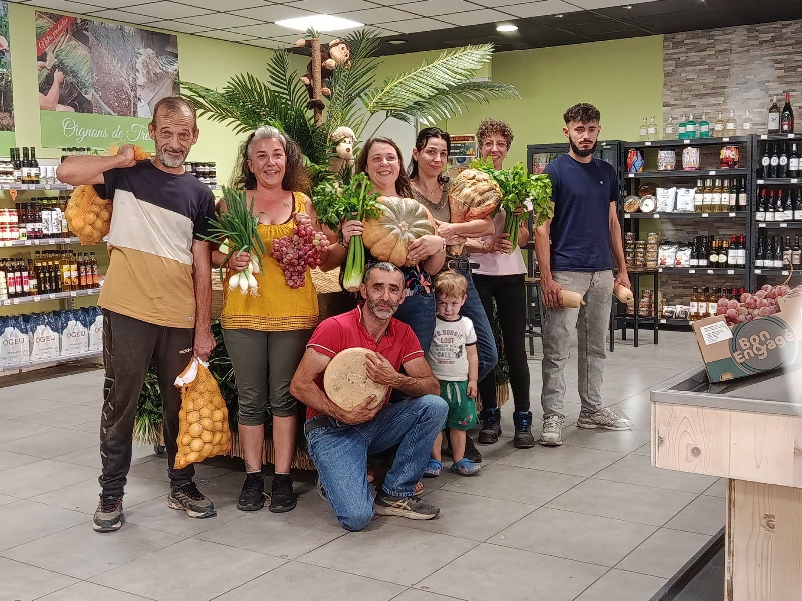
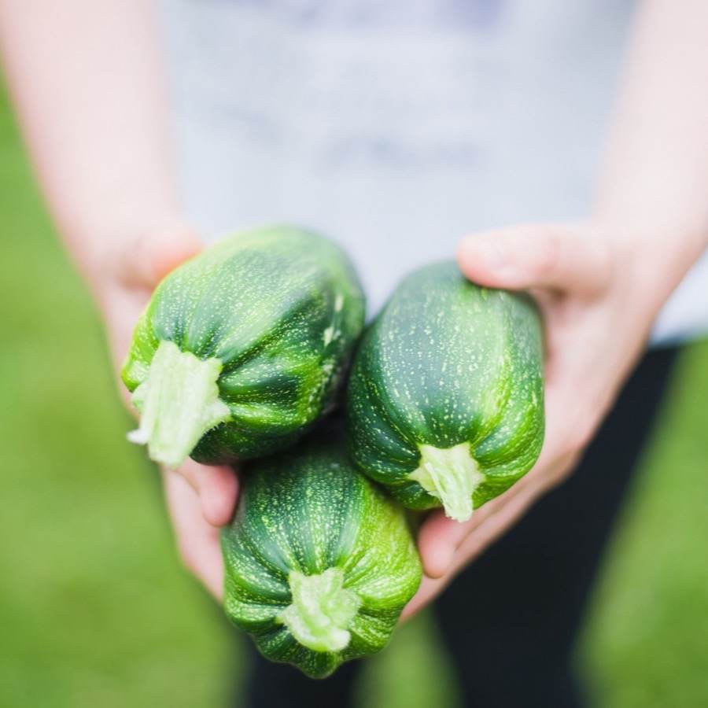
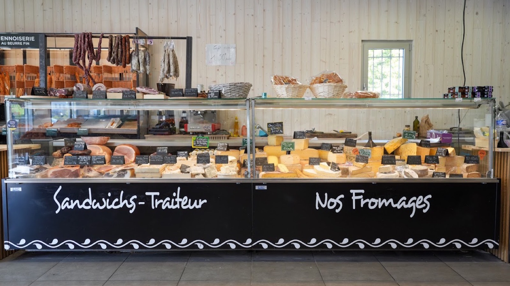
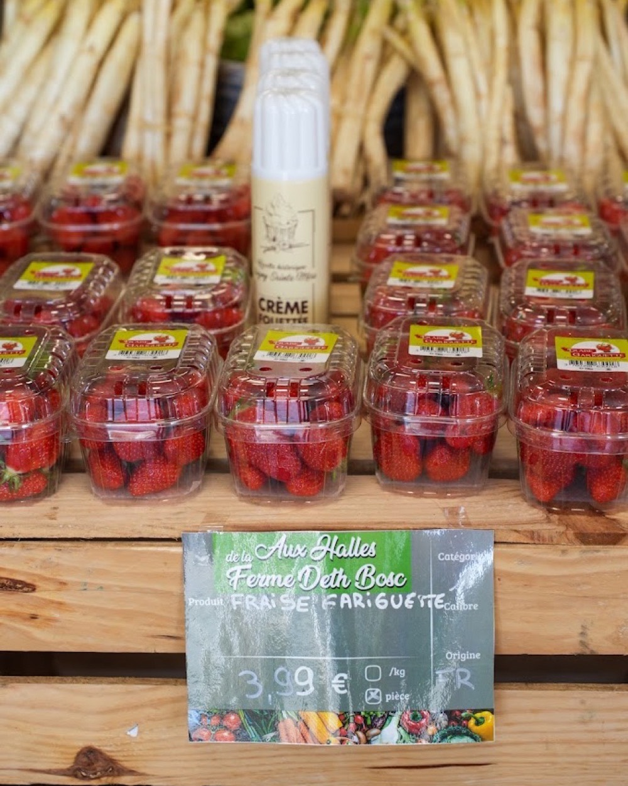
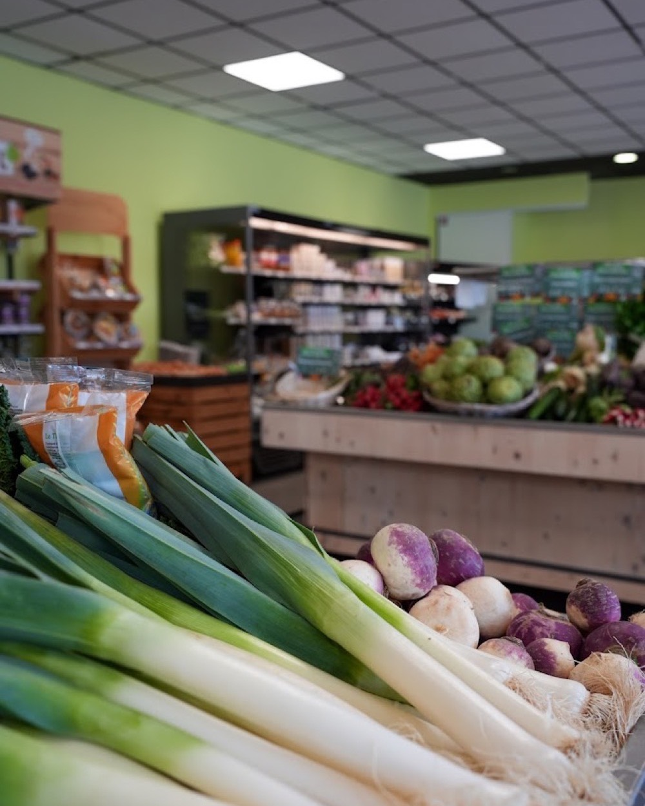
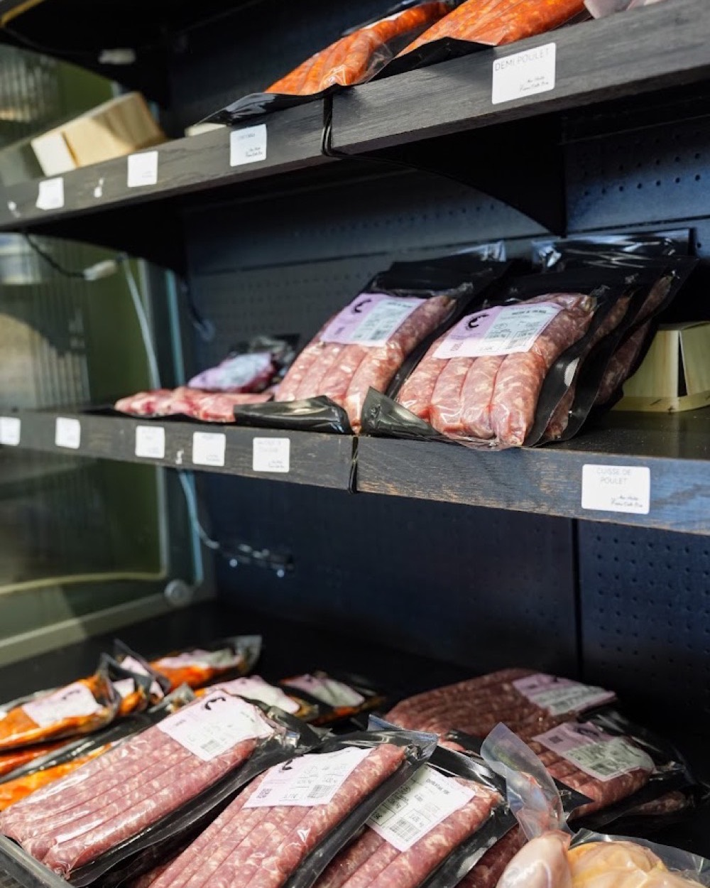
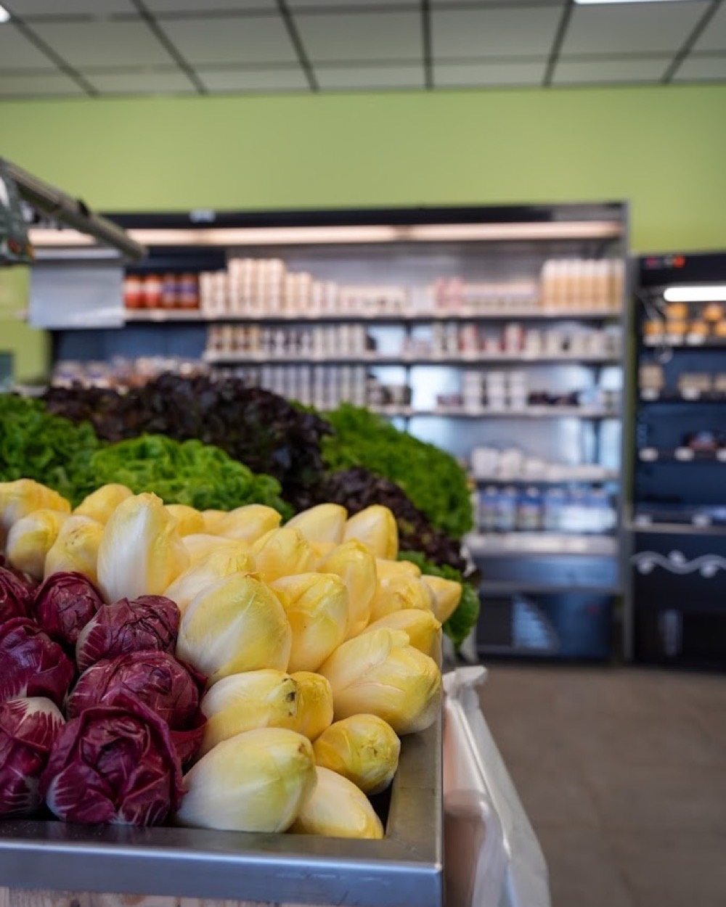

Du champ à l’étal
Deux métiers sous le même nom : celui qui fait pousser et celui qui vend. C’est de là que vient notre exigence, et nos prix.


Notre histoire
Deux métiers, une seule maison
La Ferme Deth Bosc, c’est la rencontre de deux métiers : une exploitation agricole spécialisée dans la culture de légumes, et une société de commerce de type primeur.
Cette double casquette change tout. Nous connaissons le temps qu’il faut pour faire pousser une salade, alors nous savons reconnaître un bon produit quand nous en achetons un. Et parce qu’une partie de ce que nous vendons vient de nos propres terres, nous pouvons tenir des prix que peu tiennent.
Notre clientèle, c’est celle de tous les jours. Des familles, des habitués, des gens qui veulent bien manger sans y laisser leur budget. C’est pour eux que nous travaillons.
2points de vente
3marchés par semaine
7j/7à votre service
En images
La maison, au quotidien





Bientôt
L’équipe
Les visages derrière l’étal : ceux qui récoltent, ceux qui chargent le camion à cinq heures du matin, ceux qui vous conseillent au comptoir. Cette page arrive prochainement.